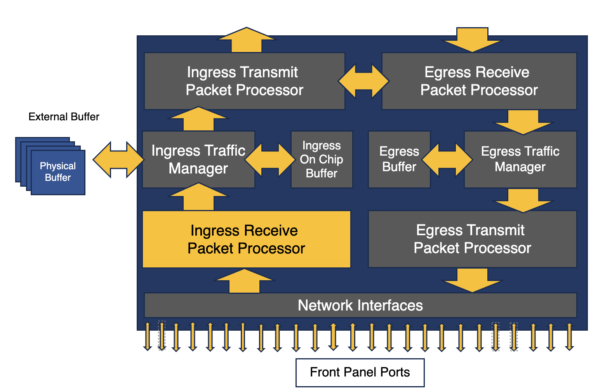

Arista January Southwest Region Newsletter¶
Happy New Year! Welcome to the January 2024 newsletter for Arista customers in the U.S. Southwest Region. Have you utilized Arista’s new solution, AGNI? In this month’s informative article on the AI-driven network identifer solution, our Systems Engineer, Alan Sukiennik, explains the innovative tool and its benefits in large enterprise and service provider networks.
There is no question about the importance python has contributed to IT automation. What’s more interesting is the use of python in creating event handlers in case of unwanted activity on your network. Our second article, written by our SE Hue McGraw, elaborates on running scripts to help you automate monitoring various types of events in your production networks.
We welcome your feedback on the newsletter. If you have any ideas on what you want to see, please reach out to southwest@arista.com.
AGNI: Arista Guardian for Network Identity¶
By: Alan Sukiennik, SE SouthWest Region
Arista Guardian for Network Identity or AGNI is an AI-driven network identity service for network security and IT operations which utilizes a novel approach to identity management in enterprise networks.

Traditional NAC solutions suffer from several drawbacks:
- Complexity of Deployment, Configuration, Maintenance and Upgrades
- Lack of elastic/dynamic scalability to meet the ever-evolving service requirements.
- Outdated secure authentication methods which are no longer recommended in the industry.
To overcome those challenges, Arista delivers a fully modern, AI-driven identity solution called AGNI to connect network, users, and devices across the local, remote, and geographically dispersed locations.
AGNI brings revolutionary improvements to scale, simplicity and security for users, their associated endpoints and IOT devices.
Arista AGNI requires no hardware, complex planning, or expensive professional services. AGNI is cloud-delivered software-as-a-service and is built on a fully modern cloud-native, API-first, microservices architecture to provide a seamless user experience without latency or service disruptions.
AGNI provides simple self-serving onboarding using a single sign-on for wireless unique PSKs and 802.1x digital certificates, cloud-native PKI infrastructure, authorization and segmentation, behavioral profiling and visibility for all connected devices and users. Devices are discovered, profiled, and classified into groups for identity-based segmentation, single pain-of-glass visibility and control.
Quote
"Arista AGNI requires no hardware, complex planning, or expensive professional services"
AGNI integrates with network infrastructure devices (wired switches and wireless access points) through a highly secure TLS-based RadSec tunnel. The highly secure and encrypted tunnel offers complete protection to the communications that happen in a distributed network environment. RadSec mechanism offers much greater security to AAA workflows when compared with traditional RADIUS environment workflows, which are not encrypted.
Arista’s Autonomous Virtual Assist, or AVA is the core to Arista’s Zero-Trust networking approach. AVA brings the human cognitive expertise through AI-based learned information about the state of devices and users’ experience on the network. AGNI introduces a new capability called Ask AVA, which can be used to interpret input from the users and network operators provided in a natural human language, derive intent, and allow the network operators troubleshoot issues and get to their Root Causes quickly and efficiently. AVA can also provide prescriptive guidance for the remediation of those issues. The use cases include errors in network provisioning and configuration, security troubleshooting, and even failure forecasting Overall AVA helps to simplify operations, reduce the mean-time-to-value, increase effectiveness, and reduce human errors.
AGNI integrates with all the leading identity (SSO) providers.
AGNI can also be easily integrated with other Arista solutions, such as CVP, EOS group-based macro-segmentation (MSS-G), NDR, as well as third-party XDR, EDR, MDM and SIEM products for post-admission control functionality.
For more information on AGNI, Click here
Event-Handler And The Power Of Python¶
By Hue McGraw, SE SouthWest Region

In a modern network, automation plays a crucial role in helping to avoid unwanted behaviors and maintaining network continuity. In some cases, issues can develop from outside of your control, no matter how well architected your network infrastructure may be. In many cases, these issues can be quickly addressed by implementing an event-handler strategy. For those readers who are unfamiliar with event handler or how it works, here it is in a nutshell:
An event handler executes a Linux bash shell command in response to a specific system event. It consists of a Bash command, a trigger, and a delay. When the trigger event occurs, the action is scheduled to run after delay seconds.
These commands are available in event-handler configuration mode:
- action bash
- delay
- trigger
So, as you can see, Event-handler by itself gives you the flexibility to monitor conditions within your environment and trigger an action to automate a task. By simply utilizing the fastCli in bash, you have a quick and easy way to perform a change withing your Arista devices. For example:
Example of a show log:
Sep 10 17:56:17 localhost EventMgr: %SYS-6-EVENT_TRIGGERED: Event handler ISP1-DOWN was activated
Sep 10 17:56:18 localhost Ebra: %LINEPROTO-5-UPDOWN: Line protocol on Interface Ethernet3 (IPS-1), changed state to up
Sep 10 17:56:18 localhost Rib: %BGP-3-NOTIFICATION: sent to neighbor 10.1.1.0 (AS 65010) 6/7 (Cease/connection collision resolution) 0 bytes
Sep 10 17:56:18 localhost Rib: %BGP-5-ADJCHANGE: peer 10.1.1.0 (AS 65010) old state OpenConfirm event RecvKeepAlive new state Established
Sep 10 17:56:20 localhost Lldp: %LLDP-5-NEIGHBOR_NEW: LLDP neighbor with chassisId 5000.00e4.7294 and portId "Ethernet1" added on interface Ethernet3
Example Config with FastCli:
event-handler ISP1-DOWN
Action Bash FastCli -p 15 -c $’config \n ip route 0.0.0.0/0 12.12.12.12’
trigger on-logging
regex "*\(IPS1\), changed to down"
The above command adds new static default route that points traffic to a 12.12.12.12 address when a condition is triggered.
I know what you are thinking now: "If I can do this out of the box, why do I need Python?" Even though you can create multiple Event-Handler instances to revert your configuration back and forth when conditions happen. Adding a Python script allows you to execute more than one Bash command in response to a trigger, allowing a more granular approach to your automation process in one shot. For example, not only can you change a default route when an interface goes down, but once it comes back up, the same script can check for routes and reachability before removing the temporary default route that was added when the link first went down.
Example Config with Python script:
event-handler ISP1-DOWN
action bash /mnt/flash/ISPdown.py <- (This points to the location you put the script)
trigger on-logging
regex "*\(IPS1\), changed to down"
Resources:
IP Static Route with Health Check
Syslog Triggered Event Scripts
Custom Event Handler
Upcoming Events¶
Arista hosts various events throughout the year for you! Members of our team organize these informative events to showcase Arista's ability to not only help improve your network, but to also assist by providing a set of tools to improve your operations! Click on the boxes below to be directed to Arista's website for lists of Webinars and Events.
-
Webinars
We make is easy for you to view products that are of interest, all virtually! Technical memebers of the team showcase outstading explanation of the products. Click below to see our list of Webinars.
-
Events
Join us in person to get a closer look in our list of produts and solution, as well as get the chance to meet members of the team. Click below to see our list of ipcoming Events.
Software Updates¶

For new code releases, click here
| Softwares | Versions | Release Date |
|---|---|---|
| EOS | 4.23.15M 4.28.10.1M 4.31.1F 4.29.6M |
January 13th, 2024 January 11th, 2024 December 12th, 2023 December 18th, 2023 |
| CVP | 2023.3.0 | December 21st, 2023 |
| DMF | 8.5.0 | January 7th, 2024 |
| WLAN CV-CUE Wireless Manager |
13.0.0-67 15.0.1-22 |
December 15th, 2022 August 29th, 2023 |
| Arista NDR | 5.0.6 | August 8th, 2023 |
| TerminAttr | 1.28.2 | November 3rd, 2023 |
Software Advisories¶
Below is a list of advisories that are announced by Arista. To view more details on the specific advisories, please click the links in the middle boxes.
| Name | Advisory Link | Date of Advisory Notice |
|---|---|---|
| Arista MOS | Security Advisory 0090 | December 5th, 2023 |
| Vxlan Forwarding | Security Advisory 0089 | August 23rd, 2023 |
For a list of the most current advisories and notices, click Here
Product Updates¶

End of Sale notices are listed below.
| Device | Name | End Of Sale Date |
|---|---|---|
| Module | 7500R2 Series Linecards | December 20th, 2023 |
| Access Points | Arista 802.11ac Wave 2 Devices | June 30th, 2022 |
| Switches | DCS-7020SRG-24C2 DCS-7280SR-48C6 & 7280TR-48C6 DCS-7280CR2-60 Series DCS-7010T-48 |
Varies by Device |
New Releases of Arista's device are listed below
| Device | More Information | Release Date |
|---|---|---|
| Arista 7130 Series | Ultra Low Latency Network | Q4 2023 |
| Arista AGNI | AI Driven Network Identity | Q2 2023 |
Feel Free to Reach Out To Us For Your Network Needs¶

We thank you for taking the time to read out newsletter today. Feel free to reach out to your SE or ASE for more information or questions regardsing your network operations. Until next month, have a good one!